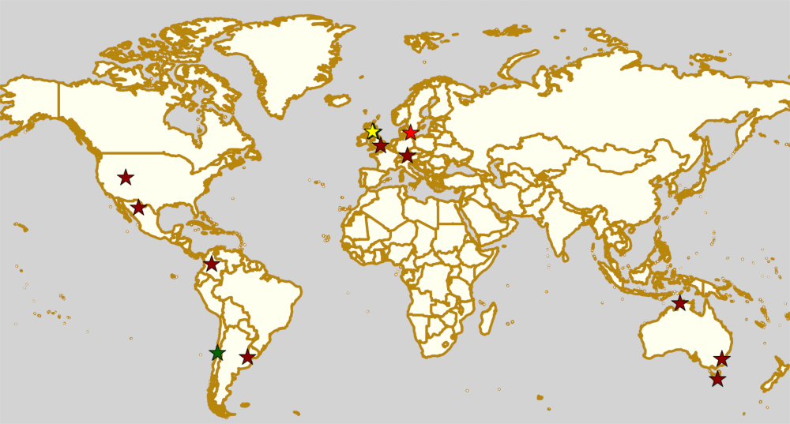

Weekend Highlights: 10 August 2019
This is another "all weekend in one update" set of highlights, although again it's a very important weekend for a few regions. In particular: not one, but two Australian teams play in the first WFTDA Continental Cup of the season; and the first of two Playoffs for the Mexican National Tournament is held in Chihuahua over the weekend.
There's also some high level action in London; some international roller derby in Buenos Aires for the third weekend running; and a German Bundesliga D1 bout in Munich... plus a fantastic all weekend Bootcamp and officiating clinic in Malmö, Sweden.
The rules are, as usual: highlights limited to 1 event per country, with an "extra" event allowed for a different kind of fixture (so, 1 tournament and 1 bootcamp), or if they involve Scottish leagues (since we are the Scottish Roller Derby Blog). Other notability might also allow the extra event - great posters, notable teams, etc. (League birthdays may count as "special" enough, at our discretion ;) )
We've bent the rules a bit this time, because it's important to highlight derby in regions which need more attention, and because it's quiet enough that we have the space.
In a bid to make this list as useful as possible, we've avoided links to Facebook except where noted. (Links to Teams are to non-Facebook resources - Instagram, or actual team pages - we'd strongly recommend that Teams get themselves an actual webpage [we can help host one if you need help]).
Locations are roughly organised East-West (with things before the weekend out sequence at the start).
Sat-Sun: Queanbeyan, NSW, Australia
[FACEBOOK LINK] [FTS LINK 1] [FTS LINK 2] [FTS LINK 3] [FTS LINK 4] [FTS LINK 5] [FTS LINK 6]
Varsity Derby League host a two-day derby extravaganza, 6 games across 5 leagues, WFTDA-gender, MRDA-gender and OTA-gender teams!
- Varsity Derby League (Canberra) versus South Sea Roller Derby (Melbourne)
- Capital Carnage (Canberra M) versus Sydney City SMASH (Sydney M)
- Smackademics (Canberra O) versus CRASH (NSW+ACT O)
- South Sea Roller Derby versus Sydney Assassins (Sydney Roller Derby A)
- Varsity Derby League versus Sydney Assassins
- Smackademics versus Sydney City SMASH
Event starts: 1730 Saturday
Venue: QPRC Indoor Sports, 1 Yass Road, Queanbeyan, New South Wales
Sat: Hobart, TAS, Australia
Convict City Roller Derby League host "TAS versus Aus", a day-long tournament of both WFTDA-gender policy and Open To All policy bouts, featuring teams from Tasmania, and visitors from the Australian mainland.
- Geelong Roller Derby League versus Black Lightning (Convict City | Hobart)
- United Tasmanian Roller Derby versus Gender Ending Story (Australia Open-Gender collective)
- Geelong Roller Derby League versus Orange Thunder (Convict City | Hobart)
- Low-Contact rules game
- Gender Ending Story versus Orange Thunder
- Gender Ending Story versus Geelong Roller Derby League
Currently not listed in FTS, as it cannot rate some of these teams
Event starts: 0900 Saturday (doors open)
Venue: Kingborough Sports Centre, Hobart, TAS, Australia
Sat: Marrara, NT, Australia
Darwin Roller Girls host the start of their home teams season. To increase affordability, Darwin's home teams games this season are entry by donation, pay what you can afford.
- Arafuries versus Psyclones (Darwin Home teams)
Event starts: 1800 Saturday (doors open)
Venue: Marrara Indoor Stadium, Abala Rd, Marrara, NT, Australia
Sat-Sun: Malmö, Sweden
Crime City Rollers host their Summer Bootcamp, which they've been trailing for several weeks now. This is a two-day skater bootcamp, with levels for Advanced, Intermediate and Juniors (15+) skaters. The bootcamp is coached by Crime City's high level A team skaters, including Sexual Her Ass-meant, Lezz Roll, Below Me, Dykestalker, Goldieblocks, Curly Håår, and Briken. In addition, there's parallel Officiating clinics for Referees and NSOs, covering topics including Discretion in Officiating, Polices and Procedures, Head Refereeing and Head NSOing, Stress Management and Tournament Survival, and more. The Officiating Clinics are coached by Kirahvi and Jens Hötger.
Event starts: 1000 Saturday
Venue: Kopparbergsgatan 8, Malmö, Sweden
Sat: Munich, Germany
[FACEBOOK LINK] [FTS LINK (Bundesliga D1)] [FTS LINK 2]
Munich Rolling Rebels host an A/B double header of German roller derby this Saturday, including a headlining Bundesliga D1 bout.
- Munich Rolling Rebels (Munich A) versus Dresden Pioneers [Bundesliga D1]
- Municorns (Munich B) versus Demolition Derby Dolls (Hannover A)
Event starts: 1500 Saturday (doors open)
Venue: Städtische Sporthalle Allach, Eversbuschstr. 124, Munich, Germany
Sat: London, UK
[FACEBOOK LINK] [FTS LINK 1] [FTS LINK 2] [FTS LINK 3]
London Rollergirls host a triple header, with each bout being exciting. London Brawling take on Rainy City, the only UK team to have taken away their #1 spot (and try to take that back), and Paris Roller Derby, the #1 rated WFTDA French team. And, in between, London's new, and currently un-named D team make their debut on track!
- London Brawling (London A) versus Rainy City Roller Derby (Oldham A)
- "London D" versus Killa Hurtz (Essex ?)
- London Brawling versus Paris Roller Derby
Event starts: 1300 Saturday (doors open)
Venue: Crystal Palace National Sports Centre. London, UK
Sat: Bonnyrigg, Scotland
Lothian Roller Derby are at Midlothian Outdoor Festival, representing the sport with open skate sessions throughout the day.
Event starts: 1400 Saturday
Venue: Bonnyrigg Park, King George's Field, Bonnyrigg, Midlothian, Scotland
Mon: Grangemouth, Scotland
Bairn City Rollers host an Open To All genders mixed scrimmage. Also open to all Referees and NSOs who want to get more practice.
Event starts: 1930 Monday
Venue: Grangemouth Sports Complex, Abbots Road, Grangemouth, Scotland
Sat: Buenos Aires, Argentina
[FACEBOOK LINK] [FTS LINK 1] [FTS LINK 2]
Sailor City Rollers continue the strong series of international Roller Derby events in Argentina recently, by hosting Chile's Metropolitan Roller Derby as part of a double header. This first bout is also WFTDA Sanctioned, and gives Metropolitan a chance to keep their WFTDA rating fresh.
- Sailor City Rollers All Stars (Buenos Aires A) versus Metropolitan Roller Derby (Santiago A)
- Sea Monsters (Sailor City C) versus Bastardas Roller Derby Tigre ( )
Event starts: 1900 Saturday (first bout?)
Venue: Dean Funes 1368, Boedo. Polideportivo Ernesto Schooon", Buenos Aires, Argentina
Sat: Viña del Mar, Chile
Tacones Bandidos host a fundraising Bingo Party, supporting the league in their attendance at both the Chilean national tournament, Torneo X, and their opportunities to play other international events within Latin America.
Event starts: 1600 Saturday
Venue: Calle Simón Bolívar, Junta Vecinal, Forestal Bajo, Viña del Mar, Chile
Sat-Sun: Chihuahua, Mexico
Liga Chihuahua Roller Derby host the first of two Division 1 Playoffs for this year's Mexican National Tournament, run as always by Asociación Mexicana de Roller Derby . We wrote up an article earlier on the setting for this year's tournament for background.
- Juárez All Stars
- Discordias
- Baja Roller Derby
- Medusas
- Furiosas
- Fugaz
Event starts: 0800 Saturday (doors open)
Venue: Facultad de Ciencias de la Cultura Física., Periférico De La Juventud, Chihuahua, Chihuahua, Mexico
Sun: Bogotá, Colombia
Rock N Roller Queens host a "friendly" tournament for Bogotá's derby community - a "quadrangular" round-robin tournament, round-robin style.
- Teams:
- Rock N Roller Queens (Bogotá)
- Kings Roller Derby (Bogotá M)
- Combativas Revoltosas (Bogotá)
- Mixed Subscription team
At present, there is no event for this on Facebook, and the RRQ FB page is very inactive. We have not listed this in FTS, as the games are described as "friendlies". As soon as we find a public link for this event, we will add it to this entry.
Event starts: 1400 Sunday
Venue: Pista Polo, Cra. 24 #24a - 86a, Bogotá, Colombia
Also of interest, due to their attendees:
Fri-Sun: Orem, UT, USA
[FACEBOOK LINK] [FTS LINK] [WFTDA LINK]
Happy Valley Derby Darlins host the WFTDA North America West Continental Cup 2019. As well as competitors from North America, this is of interest to us because of the attendance of Adelaide Roller Derby and Sun State Roller Derby both representing Australia.
- Teams:
- North Star Roller Derby (Minneapolis)
- Team United Women's Roller Derby (Des Moines)
- V Town Roller Derby (Visalia, CA)
- Happy Valley Derby Darlins (Utah County)
- Sacramento Roller Derby
- Red Stick Roller Derby (Baton Rouge)
- Jet City Roller Derby (Everett, WA)
- Adelaide Roller Derby
- Calgary Roller Derby Association
- Rocky Mountain Rollergirls (Denver)
- E-Ville Roller Derby (Edmonton)
- Sun State Roller Derby (Brisbane/QLD)
Event starts: 0900 Friday (doors open)
Venue: UCCU Center, 800 W University Pkwy, Orem, UT, USA